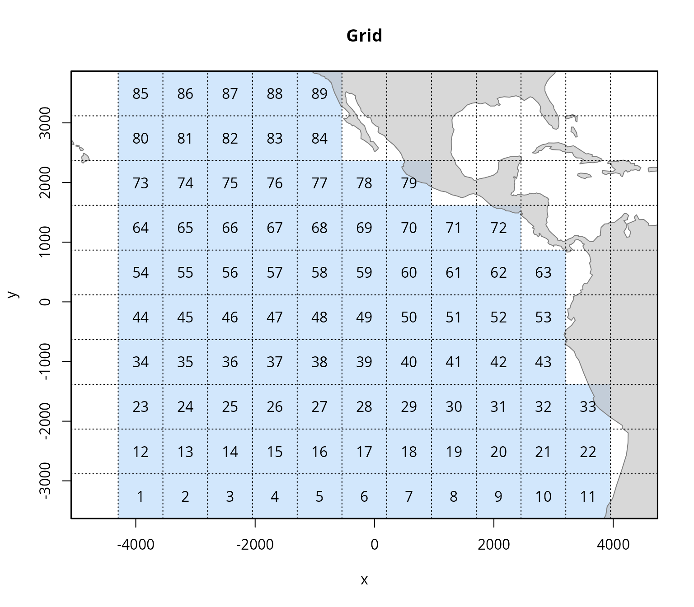
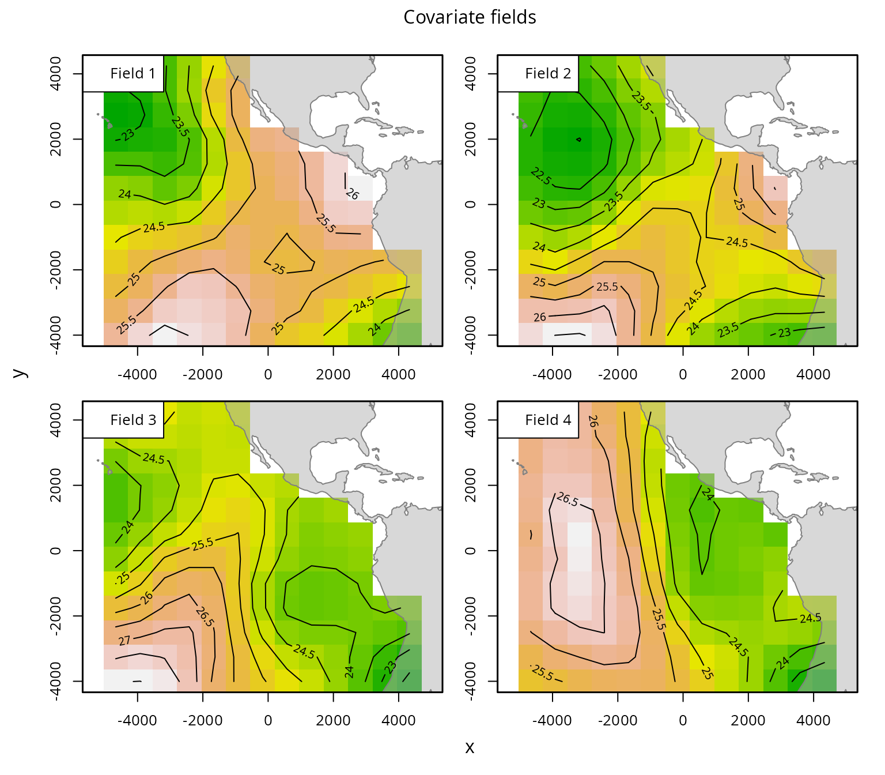
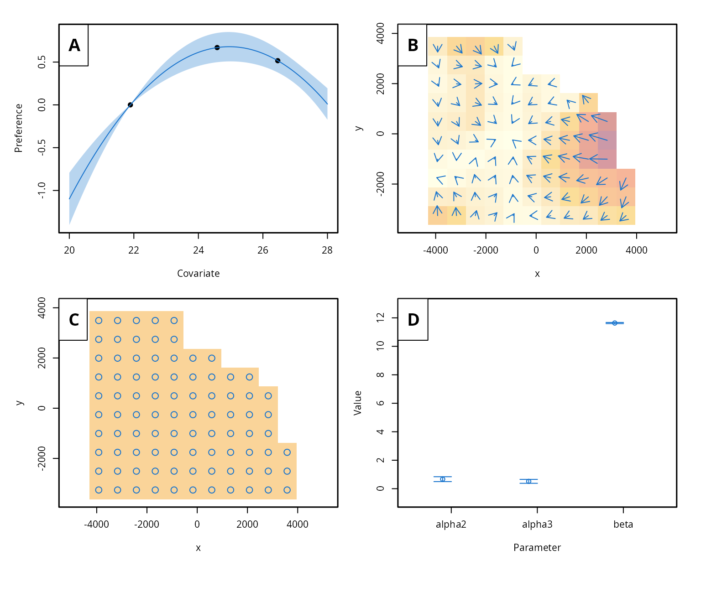
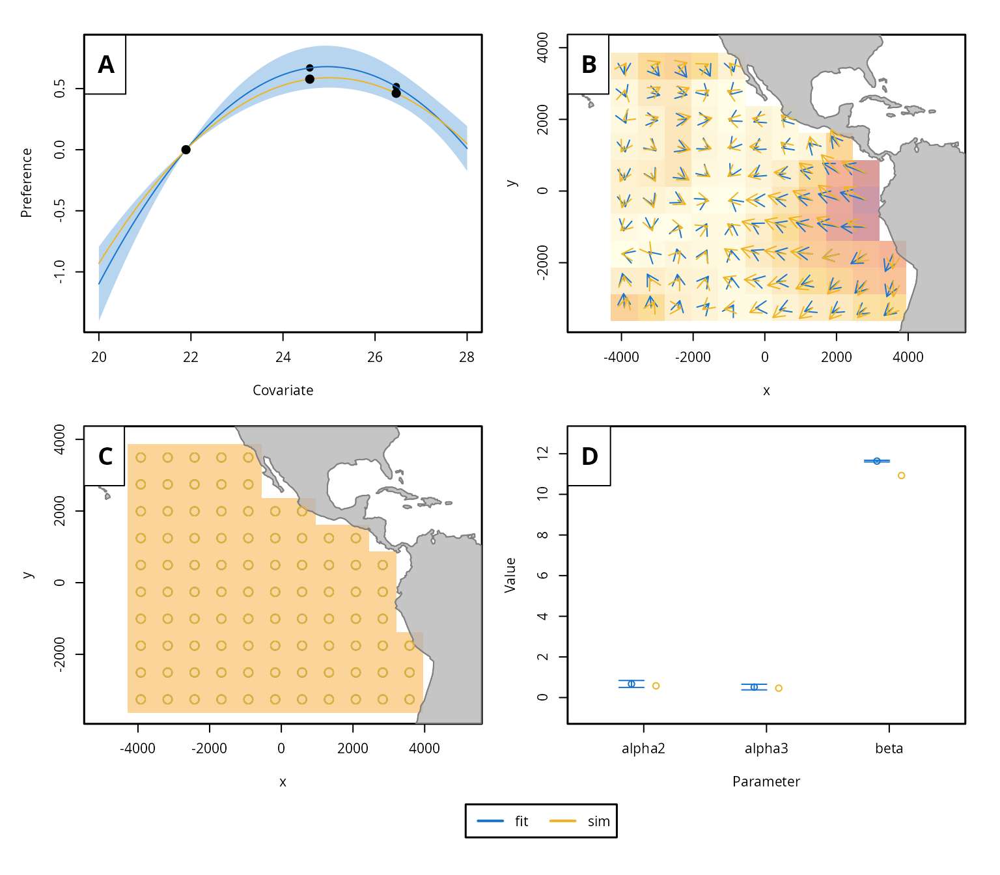

This tutorial illustrates the application of the admove package to model fine-scale movement based on tagging data.
Outline:
- Prepare the data
- Fit the model
- Results
- Advanced settings
- Summary
- References
The package is loaded into the R environment with:
This introductory tutorial uses a simulated data set included in the
package: “skjepo”. It is already available after loading the package and
corresponds to a list that includes the main simulation object (of class
admove_sim), which contains all required simulated data and
can be used right away to fit the model, as well as five individual data
sets: grid, cov, ctags,
dtags, and a fitted object fit.
str(skjepo, 1)
#> List of 6
#> $ sim :List of 8
#> ..- attr(*, "class")= chr [1:2] "admove_sim" "list"
#> ..- attr(*, "sref")=List of 3
#> .. ..- attr(*, "class")= chr "admove_sref"
#> ..- attr(*, "tref")=List of 3
#> .. ..- attr(*, "class")= chr "admove_tref"
#> $ grid :List of 8
#> ..- attr(*, "class")= chr [1:2] "admove_grid" "list"
#> ..- attr(*, "sref")=List of 3
#> .. ..- attr(*, "class")= chr "admove_sref"
#> $ cov : 'admove_cov' num [1:13, 1:12, 1:8] 25.5 25.9 26.1 26 25.9 ...
#> ..- attr(*, "dimnames")=List of 3
#> ..- attr(*, "sref")=List of 3
#> .. ..- attr(*, "class")= chr "admove_sref"
#> ..- attr(*, "tref")=List of 3
#> .. ..- attr(*, "class")= chr "admove_tref"
#> $ ctags:'data.frame': 200 obs. of 9 variables:
#> $ dtags:List of 20
#> $ fit :List of 14
#> ..- attr(*, "class")= chr [1:2] "admove" "list"
#> ..- attr(*, "sref")=List of 3
#> .. ..- attr(*, "class")= chr "admove_sref"
#> ..- attr(*, "tref")=List of 3
#> .. ..- attr(*, "class")= chr "admove_tref"These data sets illustrate the typical structure of raw input data and demonstrate how the functions in the admove package can be used to convert them into the format required by the model as demonstrated in the next section.
Prepare the data
The skjepo data list contains two main tagging data
sets: one with information on releases and recoveries of mark-recapture
tags, and another with track data from data-storage tags. These data
sets can be prepared for analysis using the built-in function
prep_tags(), allowing users to specify which columns
contain the release and recapture times and locations, and automatically
convert date fields to the required format.
A key aspect of the preparation of tagging data and the use of this function is the space and time reference information. The data set with the mark-recapture tags contains information about the date and position when individuals were released and recaptured:
head(skjepo$ctags)
#> fish_id date_time species rel_len rel_lon rel_lat date_caught
#> 1 u6hq3n-1 43901.52 111 45.91377 -105.4224 0.3943493 44272.60
#> 2 u6hq3n-10 43901.52 111 47.41883 -105.4224 0.3943493 44017.43
#> 3 u6hq3n-100 43851.60 111 52.86190 -114.3733 -6.5771942 44064.60
#> 4 u6hq3n-101 43851.60 111 45.20155 -114.3733 -6.5771942 44533.34
#> 5 u6hq3n-102 43851.60 111 50.92635 -114.3733 -6.5771942 44407.73
#> 6 u6hq3n-103 43851.60 111 46.54024 -114.3733 -6.5771942 44113.42
#> recap_lon recap_lat
#> 1 -107.6288 -1.0960298
#> 2 -108.7149 -11.9331602
#> 3 -120.7287 0.2138117
#> 4 -121.1731 -7.8260759
#> 5 -103.4598 15.7295759
#> 6 -115.1396 -13.8510942The time information might be a date of a numeric value corresponding
to a date or just relative time passed since an origin. Similarly,
position information might correspond to any coordinate reference system
(CRS). This can either be specified when using the
prep_tags() function or afterwards. We show both ways
below.
Besides the data set and specifying the tag type (“c” for mark-recapture, “d” for data-storage, or “s” for mark-resight tags), a key argument for the function is a named vector that links the required time (“t”), and positions (“x” and “y”) with the column headers in the data set. Mark-recapture tags might be available in two data formats: in the long format, similar to the data-storage and mark-resight tags, with one time and two position columns, or in the wide format with two time columns (containing the release (“t0”) and recapture time (“t1”)) and four position columns (“x0” and “x1”, and “y0” and “y1”). For full details on how to use a function, consult its documentation. See the “preparing-tags” vignette for more information on different tag formats and how to convert tags between them.
## Prepare mark-recapture
ctags <- prep_tags(skjepo$ctags,
tag_type = "c",
names = c(t0 = "date_time", t1 = "date_caught",
x0 = "rel_lon", x1 = "recap_lon",
y0 = "rel_lat", y1 = "recap_lat"),
date_origin = "1899-12-30",
sref = list(crs = 4326),
tref = list(origin = as.POSIXct("2020-01-01", "UTC"),
units = "month"))
## Load dtags
dtags <- prep_tags(skjepo$dtags,
tag_type = "d",
names = c(t = "time", x = "mptlon", y = "mptlat"),
date_origin = "1899-12-30")
## Adjust the space reference information
dtags <- add_sref(dtags, list(crs = 4326))
## Adjust the time reference information
dtags <- add_tref(dtags, list(origin = as.POSIXct("2020-01-01", "UTC"),
units = "month"), shift_origin = TRUE)As a next step, it is recommendable to check the space and time
reference information. All data components and objects in
admove that contain information about space and/or time include
a sref (space reference information) and a
tref (time reference information) attribute. These can be
accessed with the sref() and tref() fuctions
or investigated when printing the summary of the any admove
object:
## Summarise the tagging information
summary(c(ctags, dtags))
#> <admove_tags>
#> tags total: 220
#> ---------------------------------
#> data-storage tags
#> n: 20
#> average over ids:
#> n obs: 108.15
#> duration: 10.74
#> time step: 0.10
#> x step: -0.04
#> y step: -0.02
#> ---------------------------------
#> mark-recapture tags
#> n: 200
#> average over ids:
#> n obs: 2.00
#> duration: 10.20
#> time step: 10.20
#> x step: -2.59
#> y step: -1.27
#> ---------------------------------
#> crs: WGS 84 [EPSG:4326]
#> crs units: degree
#> stored units: degree
#> crs scale: 1 degree = 1 degree
#> origin: 2020-01-01 UTC
#> units: month
#> period: 12The output provides some information about the tags and informs us
that the WGS 84 [EPSG:4326] CRS was specified for the tags. The time
reference information is specified, here with weekly time steps and the
date origin corresponding to January 19th, 2020. This is the default
behaviour of the prep_tags() function, which does not infer
space reference information by default but defines the origin based on
the first tag release time and the time step based on the average life
time of the tags.
Usually, it makes sense to specify a coordinate reference system and revise the time reference information. This ensures that the space and time units and scales are aligned between all admove components (e.g. covariate fields, grids). We can specify time and space reference information and add them to the tags with the following lines:
## Define the target time reference information
tref_target <- create_tref(origin = as.POSIXct("2020-01-01", "UTC"),
units = "month")
## Define the target space reference information using Azimuthal Equidistant
## centered at (−110, 0)
sref_target <- create_sref(crs = "+proj=aeqd +lat_0=0 +lon_0=-110 +datum=WGS84 +units=m +no_defs",
units = "km")
## Adjust the reference info for the tags
ctags <- add_sref(ctags, sref_target, transform_crs = TRUE)
ctags <- add_tref(ctags, tref_target, shift_origin = TRUE)
dtags <- add_sref(dtags, sref_target, transform_crs = TRUE)
dtags <- add_tref(dtags, tref_target, shift_origin = TRUE)Now, the tags have the required space and time reference information:
summary(c(ctags, dtags))
#> <admove_tags>
#> tags total: 220
#> ---------------------------------
#> data-storage tags
#> n: 20
#> average over ids:
#> n obs: 108.15
#> duration: 10.74
#> time step: 0.10
#> x step: -4.80
#> y step: -1.76
#> ---------------------------------
#> mark-recapture tags
#> n: 200
#> average over ids:
#> n obs: 2.00
#> duration: 10.20
#> time step: 10.20
#> x step: -285.87
#> y step: -140.05
#> ---------------------------------
#> crs: Azimuthal Equidistant [custom]
#> datum: World Geodetic System 1984
#> crs units: metre
#> stored units: km
#> crs scale: 1 metre = 0.001 km
#> origin: 2020-01-01 UTC
#> units: month
#> period: 12Although the Kalman filter (KF) engine does not necessarily require a
grid AUTHOR_PAPER, it is good practice to define a spatial grid based on
the spatial extent of the tagging data. This grid is required by the
Continuous time Markov-chain (CTMC) engine and is used by both engines
for the spatial prediction of taxis, advection, diffusion and movement
rates and for visualisation. The create_grid function
offers flexible functionality to define custom grids and to manually
include or exclude specific grid cells as needed. See more information
in the vignette("spatial-grids").
Since manual selection of grid cells is not feasible in this automated vignette, we use the grid provided in the skjepo data set, but modify it to create a coarser resolution of 1000x1000km cells.
grid <- create_grid(skjepo$grid, cellsize = 750)
plot(grid, plot_land = TRUE)
Another important component of admove are covariate fields
that taxis, advection, and diffusion through habitat preference
functions. The prep_cov function formats this data into the
structure required by the model. The covariate fields can come from
multiple sources and correspond to a range of different formats, the
vignette("preparing-covariates") gives more information on
the required format and how to convert data between different
formats.

It is not suprising if the covariate fields have different time reference information. Here, for example, the covariate fields have the same date origin as specified above (January 1st, 2020), but the time steps correspond to quarters:
tref(cov)
#> $origin
#> [1] "2020-01-01 UTC"
#>
#> $units
#> [1] "quarter"
#>
#> $period
#> [1] 4
#>
#> attr(,"class")
#> [1] "admove_tref"This is not a problem and the next functions would inform you about
this mismatch and provide tips on how to resolve them. Here we use one
of the potential ways by specifying the desired time reference
information and setting the argument shift_tref = TRUE in
the next fuction that combines all data into a single object.
## combine and check data
dat <- setup_data(grid = grid,
cov = cov,
tags = c(ctags, dtags),
tref = tref_target,
shift_tref = TRUE)The default_conf function generates a list of default
configuration settings, including flags that control which model
functionalities are activated. It is good practice to review this
configuration list to ensure that the default settings align with the
goals and structure of your analysis.
## Default configurations
conf <- default_conf(dat)Similarly, the default_par function generates a list of
default model parameters and their initial values. While users can
adjust the initial values as needed, caution is required when modifying
parameter dimensions. These dimensions must be consistent with the input
data (e.g., the number of environmental fields) and the configuration
settings (e.g., whether passive advection, taxis, or both are used).
## Default parameters
par <- default_par(dat, conf)kappa is a scaling parameter that is not estimated but scales the spatial gradient of the habitat preference function to a taxis rate. It carries the dimensions L\(^2\) L\(^{-1}\) and might differ from 1 in the simulation study. To get comparable parameter values between the simulation and estimation, it is important to fix it to the value of the simulation in the estimation:
par$logKappa <- skjepo$sim$par_sim$logKappaWith all necessary input data prepared, the model is now ready to be fitted using admove.
Fit the model
The model is fitted using the admove function. Depending
on the model’s complexity, the number of tags and the estimation engine
chosen (KF or CTMC), this step may take up to several minutes.
## Fitting movement model
fit <- admove(dat, conf, par,
verbose = TRUE)
#> 0: 2.6621148e+08: 0.00000 0.00000 0.00000
#> 1: 97824176.: 0.0304759 0.0479782 0.998383
#> 2: 58120629.: 0.144985 -0.724747 1.62271
#> 3: 20987545.: 0.0501387 -0.525837 2.59813
#> 4: 11698081.: 0.804236 -0.390874 3.24087
#> 5: 4176101.9: 0.653388 -0.172935 4.20511
#> 6: 2315402.5: 1.38283 -0.0565109 4.87917
#> 7: 899135.28: 0.881767 0.0650439 5.73601
#> 8: 477695.10: 1.00349 -0.518613 6.53883
#> 9: 182171.19: 0.849998 -0.184989 7.46896
#> 10: 113092.53: 1.49966 0.328658 8.02941
#> 11: 58857.934: 1.09352 0.155624 8.92669
#> 12: 44857.604: 1.75497 -0.0553574 9.64640
#> 13: 33307.738: 1.51547 0.211375 10.5799
#> 14: 31866.793: 1.93611 1.08067 10.8395
#> 15: 30696.247: 1.49547 0.690489 11.6480
#> 16: 30669.312: 1.42363 0.758147 11.6641
#> 17: 30619.129: 1.02488 0.728827 11.6525
#> 18: 30612.294: 0.685632 0.525310 11.5934
#> 19: 30610.207: 0.683988 0.526026 11.6453
#> 20: 30610.119: 0.667122 0.508135 11.6376
#> 21: 30610.106: 0.664376 0.512619 11.6350
#> 22: 30610.102: 0.669039 0.516039 11.6361
#> 23: 30610.102: 0.668728 0.515873 11.6366
#> 24: 30610.102: 0.669268 0.516236 11.6365
#> 25: 30610.102: 0.669468 0.516370 11.6365
#> 26: 30610.102: 0.669485 0.516383 11.6365The total run time for model construction, fitting, uncertainty estimation and prediction was here (in minutes):
sum(fit$times)
#> [1] 1.08927In addition to the input data lists, the returned object also
includes the obj (from RTMB) and opt (from the
minimiser). Both contain the estimated parameter values and other
details relevant to the model fitting.
fit$opt$par
#> alpha alpha beta
#> 0.6694851 0.5163828 11.6364623Results
The summary function can be used to get an overview of the model fit and estimated parameters:
summary(fit)
#> <admove>
#> Convergence: 0 MSG: relative convergence (4)
#> Objective function at optimum: 30610.1031617
#>
#> data-storage tags: 20
#> mark-recapture tags: 200
#>
#> Model parameter estimates w 95% CI
#> estimate cilow ciupp sd
#> alpha2 0.6694851 0.4986248 0.8403454 0.0871752
#> alpha3 0.5163828 0.3785349 0.6542308 0.0703319
#> beta 11.6364623 11.5957004 11.6772241 0.0207973
#> admove provides several functions for visualising model
results. All plotting functions start with plot_.,
e.g. plot_taxisis() to plot the estimated taxis as arrows
on a map. To get a quick overview over the main results, we can use:
plot(fit)
In this example, since the data are simulated and the true parameters
are known, we can use the plot_compare function to
visualise both the estimated and true habitat preferences and movement
patterns.
plot_compare(sim = skjepo$sim,
fit = fit,
plot_land = TRUE)
Advanced settings
There are several advanced settings in admove that will be covered in future vignettes. However, this vignette highlights three important ones: (i) grouping tags into release events to speed up model fitting, (ii) using CTMC engine as an alternative to the KF engine, and (iii) map parameters to fix or exclude them during estimation.
It is common for multiple tags to be released at the same location
and time, in particular for mark-recapture tags. Grouping these tags
into release events can significantly speed up the movement modeling, as
the analysis is performed per event rather than per individual tag. The
potential loss in accuracy is likely minimal and can be evaluated
through sensitivity analyses, while the grouped approach is recommended
for the baseline scenario due to its efficiency. The
use_release_event function enables this grouping by
assigning tags to release events based on a specified spatial grid and
time vector.
tags <- use_release_events(c(ctags, dtags),
grid = create_grid(xrange = dat$xrange,
yrange = dat$yrange,
cellsize = 100),
time_cont = seq(dat$trange[1],
dat$trange[2],
1/4))The release time and position of the mark-recapture tags has now been overwritten to the values of the release events and the individual tags have been combined to the individual release events:
ctags <- get_ctags(tags)
str(split(ctags, ctags$id),1)
#> List of 5
#> $ 1:Classes 'admove_tags' and 'data.frame': 41 obs. of 11 variables:
#> ..- attr(*, "sref")=List of 3
#> .. ..- attr(*, "class")= chr "admove_sref"
#> ..- attr(*, "tref")=List of 3
#> .. ..- attr(*, "class")= chr "admove_tref"
#> $ 2:Classes 'admove_tags' and 'data.frame': 41 obs. of 11 variables:
#> ..- attr(*, "sref")=List of 3
#> .. ..- attr(*, "class")= chr "admove_sref"
#> ..- attr(*, "tref")=List of 3
#> .. ..- attr(*, "class")= chr "admove_tref"
#> $ 3:Classes 'admove_tags' and 'data.frame': 41 obs. of 11 variables:
#> ..- attr(*, "sref")=List of 3
#> .. ..- attr(*, "class")= chr "admove_sref"
#> ..- attr(*, "tref")=List of 3
#> .. ..- attr(*, "class")= chr "admove_tref"
#> $ 4:Classes 'admove_tags' and 'data.frame': 41 obs. of 11 variables:
#> ..- attr(*, "sref")=List of 3
#> .. ..- attr(*, "class")= chr "admove_sref"
#> ..- attr(*, "tref")=List of 3
#> .. ..- attr(*, "class")= chr "admove_tref"
#> $ 5:Classes 'admove_tags' and 'data.frame': 41 obs. of 11 variables:
#> ..- attr(*, "sref")=List of 3
#> .. ..- attr(*, "class")= chr "admove_sref"
#> ..- attr(*, "tref")=List of 3
#> .. ..- attr(*, "class")= chr "admove_tref"While the function could also identify release events for
data-storage and mark-resight tags using the argument
tag_types = c("d","s","c"), this might lead to unintended
consequences when using the KF engine which includes an update step.
By default, admove uses the Kalman filter approach as
described in AUTHOR_PAPER. However, it also supports an alternative
method based on the matrix exponential. You can easily switch between
the two by setting the engine argument in the configuration
list. To use the matrix exponential approach, simply set
engine = 2.
conf <- default_conf(dat)
conf$engine <- 2Lastly, it may be useful to map parameters, for example, to estimate
a single value for both directions of passive advection. A list of
default map settings can be generated using the default_map
function. The resulting map can then be passed to admove to
control which parameters are estimated, fixed, or shared.
map <- default_map(dat, conf, par)Summary
This vignette introduced the main features and workflow of the
admove package for estimating animal movement and habitat
preferences from tagging data. Using a simulated data set
(skjepo), we demonstrated how to prepare the required
inputs, configure and fit the model, and visualise the results.
We covered the preparation of mark-recapture and data-storage tags
(prep_tags()), covariate fields (prep_cov()),
and spatial grids (create_grid()). These were then combined
using setup_data() into a format suitable for model
fitting. Configuration and parameter initialisation were handled through
default_conf() and default_par(), with model
fitting performed using admove(). The
plot_fit() and plot_compare() functions
allowed us to visualise results and compare estimated versus true
movement and habitat preference patterns.
Several advanced options were introduced, including grouping tags
into release events (get_release_event()), switching
between the two currently implemented engines for inferences: KF and
CTMC engines (engine argument), and map parameters
(default_map()) to simplify or constrain estimation.
This basic example provides a foundation for applying admove
to real tagging data. More details about the methodology are described
in AUTHOR_PAPER and in the other vignettes (get an overview with
browseVignettes("admove")). Further details about functions
and their arguments can be found in the help files of the functions
(help() or ?, where the dots refer to any
function of the package).